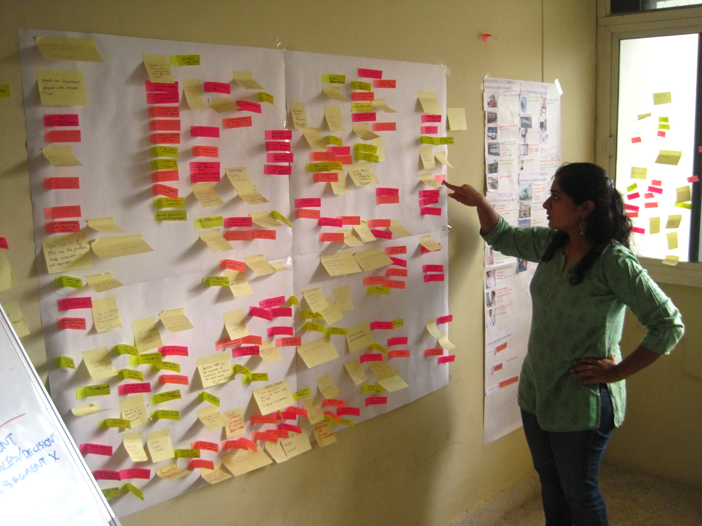
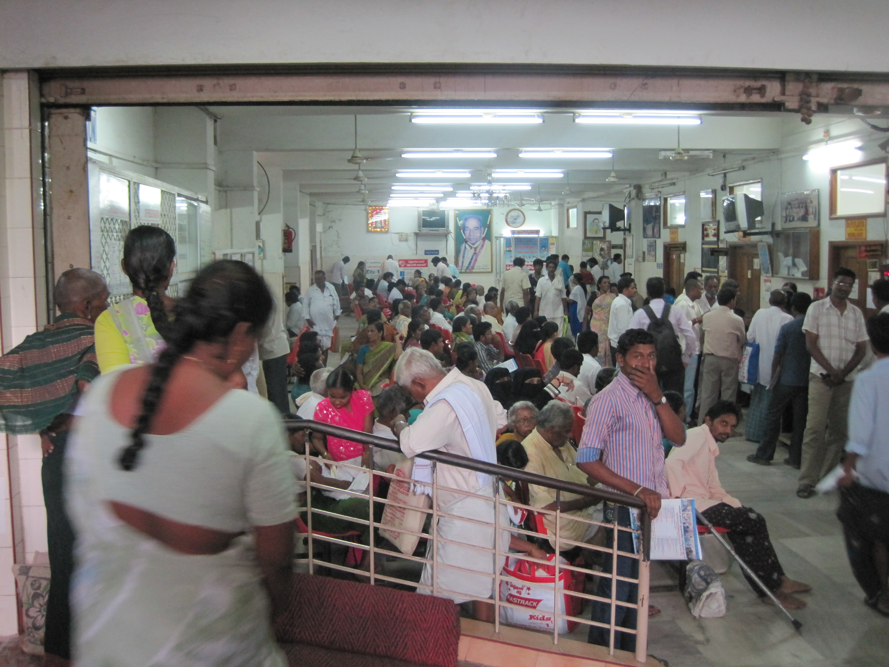
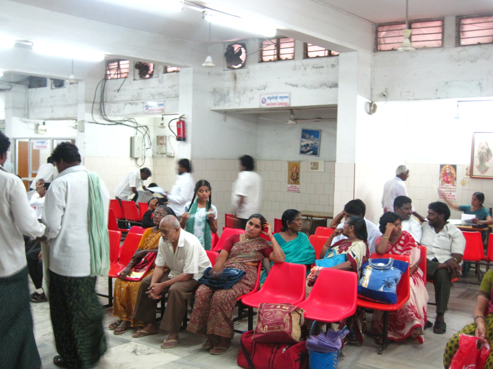
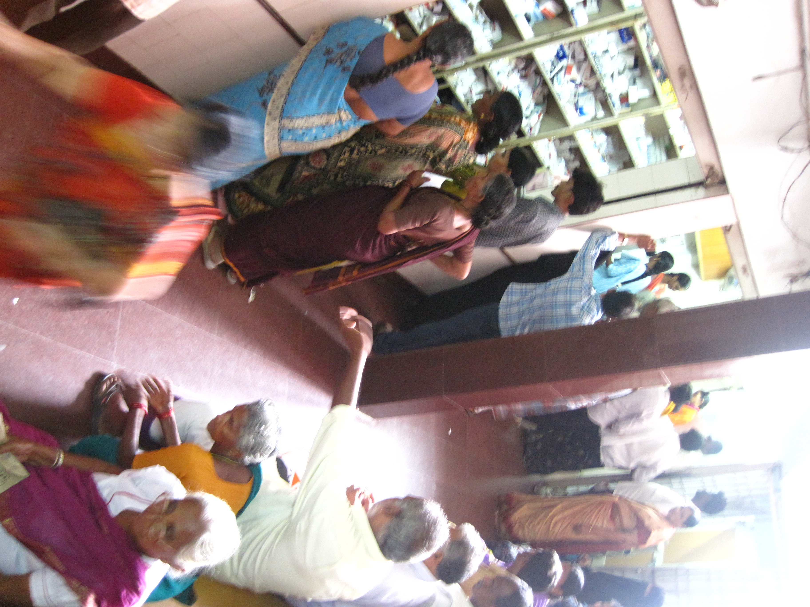
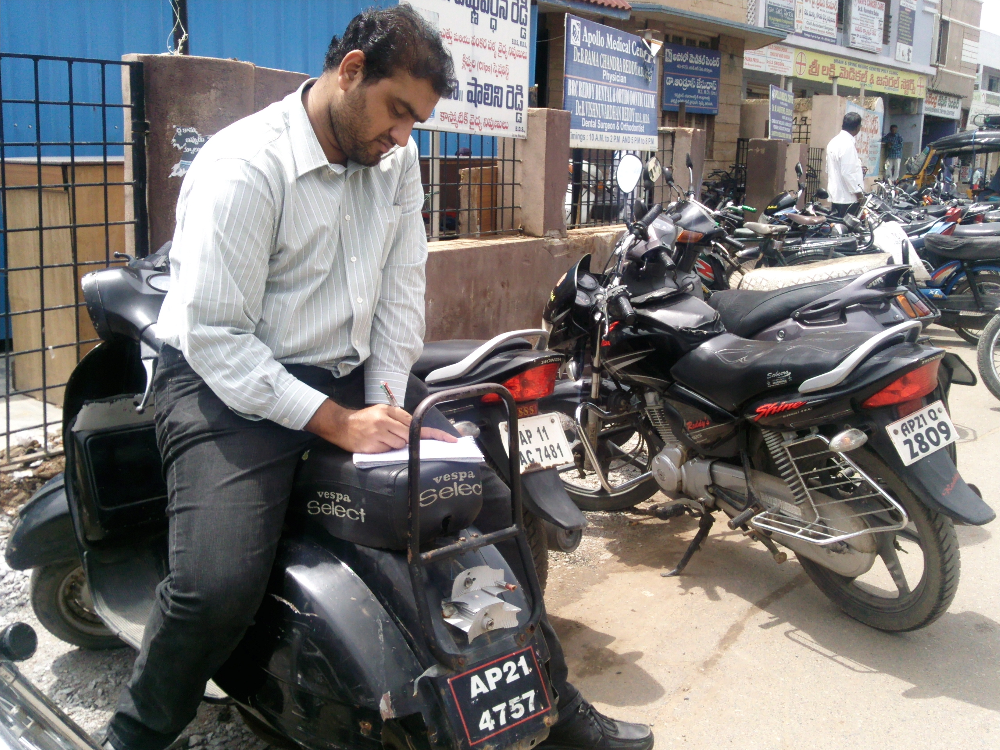
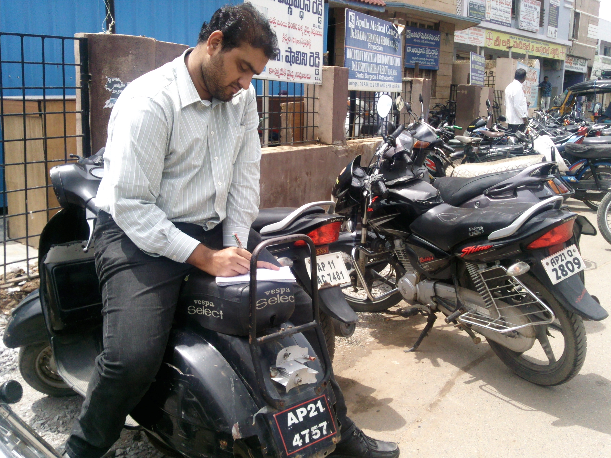

Overview
Design brief
Understand users and their behaviors with respect to low-cost hospitals in tier-two cities across south India.
The challenges
- Our client wanted to expand a hospital chain into tier-two cities in India, and didn’t know how to consider user experience in the expansion plan
- Current hospital journey is largely built around operations management rather than user experience
- Users of low-cost hospitals do not see themselves as consumers with real choices
- There are strong cues for hospital and health care quality (such as how the doctor looks) which often have very little to do with actual quality
- Patients with enough money often go to urban centers (tier one) cities because of a lack of options in their smaller cities. This creates a negative cycle where hospitals don’t feel an incentive to move into tier two cities
The insights
- Patients center their hospital choice on the doctor who is present. Hospital build ‘multi- specialty’ units, but patients don’t mind traveling from hospital to hospital for different services if they get their doctor of choice
- Patients prefer customer service over the latest technology in health care delivery
- Patients and care-givers seek transparency and information in the health care process
- Patients have significantly different journeys if they are seeking urgent emergency care versus attending a planned surgery or routine check-up
Our recommendations
- Our client should create a hospital that highlights doctors over specialty areas
- We created a complete journey map to outline how patients and care-givers navigate the health care system. Our client should base improvements and interventions on the gaps and issues in the existing journey
- Our client should focus on attracting the middle-income population in tier 2 cities. The lowest income group is likely to continue using government hospitals, and the high income group will continue traveling to urban areas until new hospital establish solid reputations in their cities
Team
I worked with Varun and Sandhya at Policy Innovations, and Aditi Barve, an independent interaction designer. My key contributions were in research, journey mapping, and presentation.
Discovery
In the patient's shoes
Guerilla testing
 
Immersing in the environment
Contextual Inquiry


 
